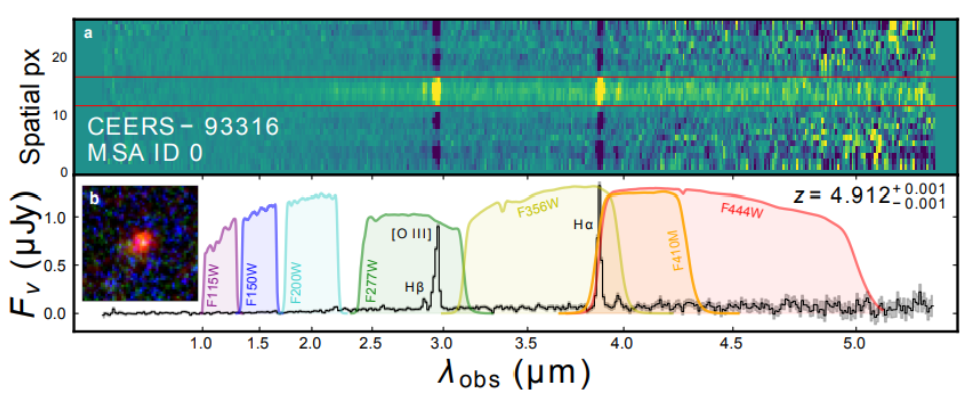
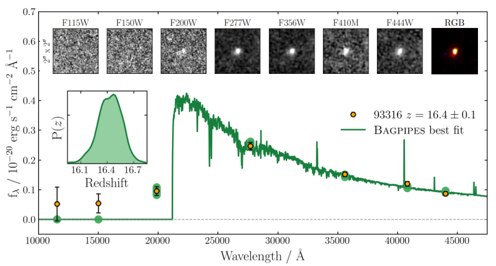
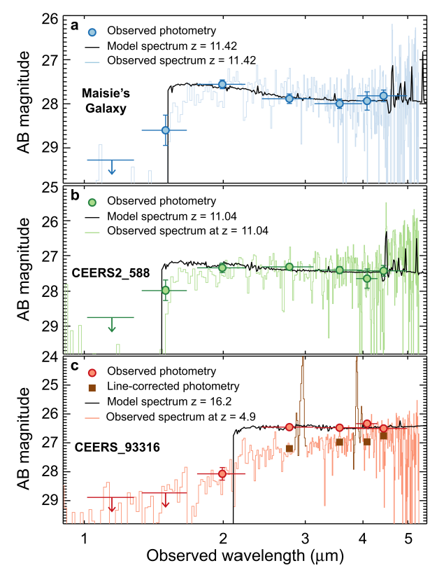

HETDEX Line Classification Tool
A tool to classify detected emission lines as [OII] or Lyα.Link blinded from debate judges.
| Debater A: [Opening] The redshift (D1) of CEERS-93316 is z ~ 4.9. (P. H. et al.) | Debater B: [Opening] The redshift (D1) of CEERS-93316 is z ~ 16.4. (C. D. et al.) |
| Debater B: [Question 1] What method did you use to calculate the redshift of the galaxy? | Debater A: [Question 1] What method did you use to calculate the redshift of the galaxy? |
| Debater A: [Answer 1] We used spectroscopy to identify key emission lines (D2), and used the difference in their observed and expected wavelengths to calculate the redshift of the galaxy. | Debater B: [Answer 1] We used photometry with observations from multiple filters to identify the position of the Lyman break (D3) and used it to calculate the redshift of the galaxy. |
| Debater B: [Question 2] What emission lines did you use for your analysis? | Debater A: [Question 2] What filters did you use in your analysis? |
| Debater A: [Answer 2] We detect seven emission lines consistent with this redshift, with three different line complexes ([OII], [OIII], and Hα) each independently indicating z ~ 4.9. Figure 3 from P. H. et al. shows the spectrum of the galaxy, with the peaks for Hα+[NII] and [OIII]+Hβ being especially prominent. | Debater B: [Answer 2] The filters we used are presented in Figure 4 from C. D. et al. The key filters used to identify the Lyman break were F150W, F200W, and F277W, where there is a clear drop in the signal in the images after the F200W filter. The SED fit (D4) to the data predicts a Lyman break at ~21000 Angstrom. |
| Debater B: [Question 3] How can you be certain that the emission lines you've observed are Hα+[NII] and [OIII]+Hβ? The lines could be created by other atoms, which would significantly affect your fit for the redshift. For example, there's a whole software package (HETDEX) that exists just to try to figure out whether single detected emission lines are [OII] or Lyα (from hydrogen). | Debater A: [Question 3] (a) Your SED fit predicts negligible flux blueward of the break, but the observations show significant flux in those regions. (b) Figure 4 from P. H. et al. shows the spectrum of CEERS-93316 alongside two high redshift galaxies with actual Lyman breaks. z=16.2 fits the photometric points but not the spectrum, how do you explain this? |
| Debater A: [Answer 3] We use a standard dusty galaxy model with a spectrum that is similar to other galaxies observed around the object of interest. Relative wavelengths of emission lines are well documented, and these strong detections clearly point to star formation in the galaxy. | Debater B: [Answer 3] (a) JWST introduces zero point errors in flux measurements, and these need to be corrected for during the analysis. (b) The observed flux blueward of the Lyman break can be attributed to noise being boosted by flux uncertainty, and does not represent actual emission from the galaxy. |